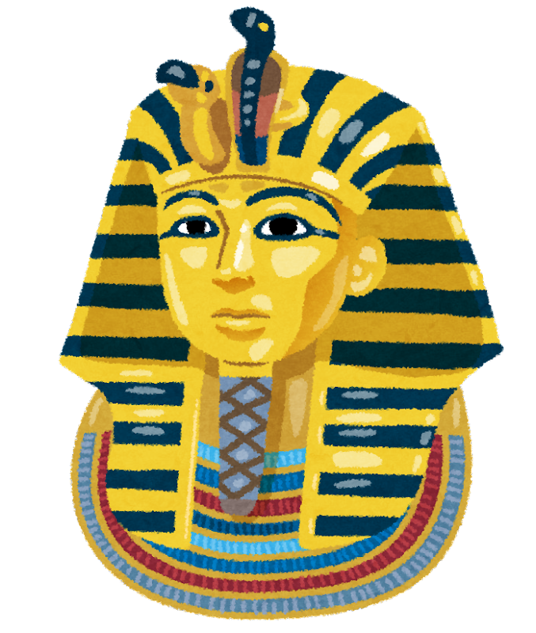

歴史
エジプトは、世界でも最も古い文明の一つである古代エジプト文明が栄えた場所として知られています。その歴史は非常に古く、ピラミッドやスフィンクスなどの壮大な建造物や、ヒエログリフと呼ばれる文字で知られる古代文明を生み出しました。
ナイル川の豊かな土壌によって支えられたエジプトは、農業が盛んであり、古代から食糧の宝庫として栄えました。また、ファラオと呼ばれる王たちが統治し、神聖な権威を持っていました。
その後、エジプトは異なる文化や宗教の影響を受けながら歴史を歩んできました。イスラム教やキリスト教、ユダヤ教などの宗教が根付き、アラブ文化とアフリカ文化の融合の地として発展しました。
近代に入ると、エジプトは植民地支配の時代を経験しましたが、20世紀に入ると独立を果たし、現在のエジプト共和国が成立しました。エジプトはアフリカ・中東地域において文化や歴史の中心的な役割を果たし、世界的にも注目される国です。観光資源も豊富であり、ピラミッドや古代遺跡、ナイル川のクルーズなどが世界中から観光客を引きつけています。
魅力
古代遺跡と歴史的な遺産: エジプトは古代エジプト文明の栄華を象徴する多くの遺跡が残されています。中でも、ピラミッドは古代エジプトの王たちの墓であり、その巨大な構造と精密な建築技術は世界中から称賛されています。また、スフィンクスやルクソール神殿、カルナック神殿などの建造物も古代の偉大な文明を物語っています。
ナイル川のクルーズ: エジプトはナイル川の豊かな土壌に支えられています。ナイル川クルーズは、その美しい風景とともに、古代遺跡を訪れる船旅を楽しむことができます。このクルーズは、エジプトの文化と自然を同時に体験する素晴らしい機会です。
文化と宗教の融合: エジプトは歴史的にさまざまな文化や宗教の影響を受けてきました。古代エジプト文明やファラオの時代、ローマ帝国やギリシャの支配、さらにはイスラム教やキリスト教の拡大など、様々な時代を経てきました。そのため、エジプトは多様な文化と宗教が融合した独自の文化を持っています。
美しい海岸線: エジプトは紅海に面しており、美しいビーチやリゾート地が点在しています。紅海はダイビングやスノーケリングに最適な場所であり、カラフルなサンゴ礁や多彩な海洋生物を観察することができます。
豊かな食文化: エジプトの食文化は多様であり、地中海料理や中東料理の影響を受けています。例えば、フール・メドメス（豆のペースト）、クシャリ（エジプトのパスタ料理）、クナフェ（スイーツ）などが代表的な料理です。これらの料理は、エジプトの文化や歴史を感じることができる食べ物です。
観光 
古代エジプトの遺跡: エジプトは古代文明の中心地の一つであり、ピラミッドやスフィンクスなどの巨大な建造物が残されています。ギザのピラミッドやルクソールの神殿など、古代エジプトの神秘的な遺産を見ることができます。
ナイル川クルーズ: ナイル川はエジプトの生命線であり、その周辺には多くの遺跡や歴史的な都市があります。ナイル川クルーズに参加すると、川沿いの景色を楽しみながら、ルクソールやアスワンなどの古代都市を訪れることができます。
レッドシーのリゾート地: エジプトには美しい海岸線があり、特にハルガダやシャルムエルシェイクなどのリゾート地は世界的に有名です。ここでは美しいビーチでのんびり過ごしたり、シュノーケリングやダイビングなどの水上アクティビティを楽しむことができます。
歴史的な都市: カイロやアレクサンドリアなどの都市には、古代からの歴史や文化が息づいています。エジプト博物館やアレクサンドリア図書館などの観光スポットを訪れると、エジプトの豊かな歴史と文化に触れることができます。
砂漠サファリ: エジプトの砂漠地帯では、キャラバンやジープを使ったサファリツアーが人気です。サハラ砂漠やシナイ半島の砂丘を探索すると、壮大な自然の景観や星空を見ることができます。